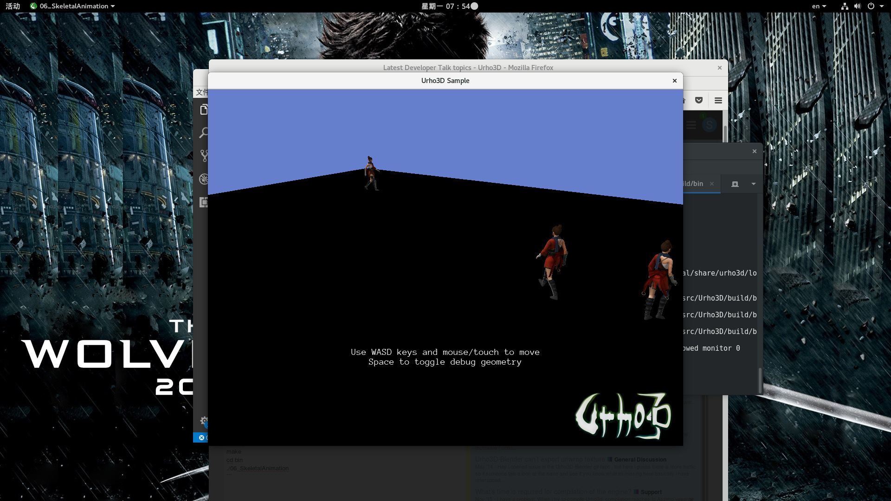
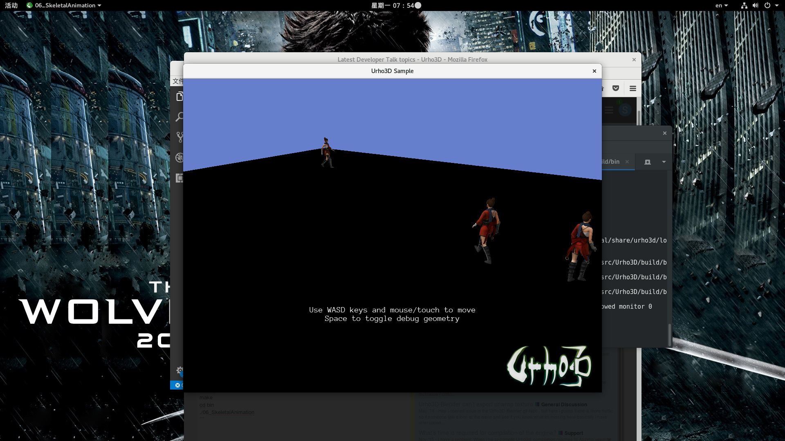

seven
I compiled the urho3d under Fedora26,
and the compilation process is：
mkdir build
cd build
cmake ..
make
cd bin
./06_SkeletalAnimation

I compiled the urho3d under Fedora26,
and the compilation process is：
mkdir build
cd build
cmake ..
make
cd bin
./06_SkeletalAnimation


Make sure you are using proprietary graphics driver (kernel module) and not those from Mesa.